Baxtlilar — rang mavzulari
Brendbuk bo‘yicha alohida dizayn va 14 ta palitra, bitta build. Har biri ilovaning o‘zida ishlaydi: ?theme=tNN qo‘shilsa mavzu shu qurilmada saqlanadi, ?theme= uni olib tashlaydi. Tarif ranglari va suratlar o‘zgarmaydi. Pastda: tadqiqot, keyin har bir mavzu — ranglar, sabab, AA natijasi va uchta jonli ekran.
 brand · Brendbuk dizayni
brand · Brendbuk dizayni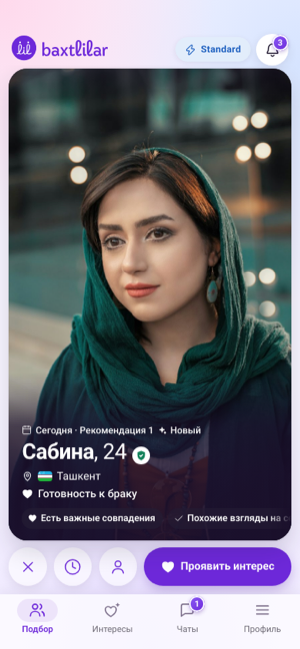
t01 · Hozirgi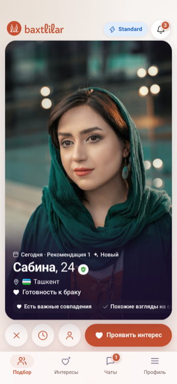
t02 · Brendbuk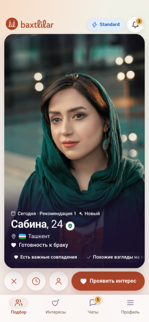
t03 · Brendbuk+t04 · Samarqand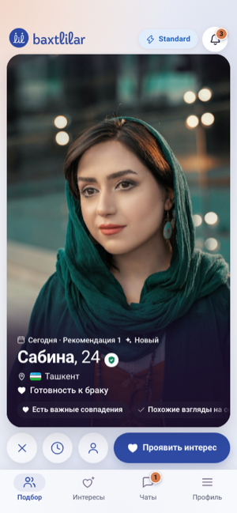
t05 · Lojuvard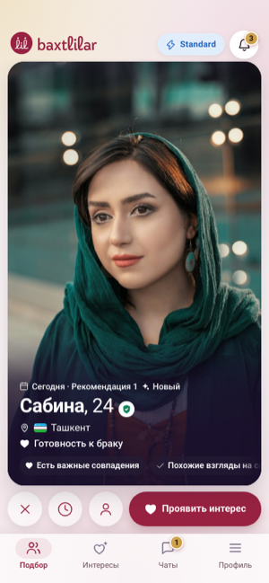
t06 · Anor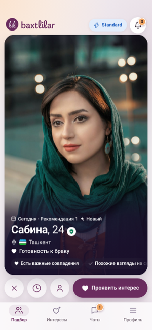
t07 · Olxo‘ri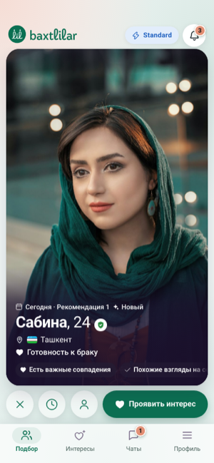
t08 · Zumrad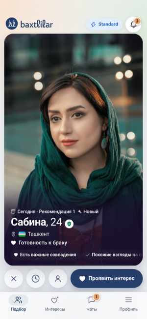
t09 · Sabza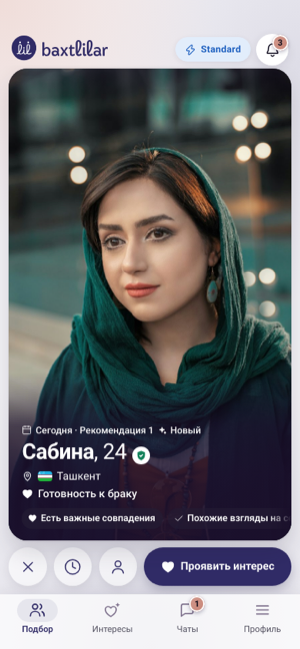
t10 · Tun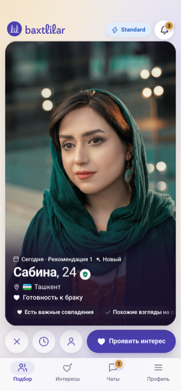
t11 · Qum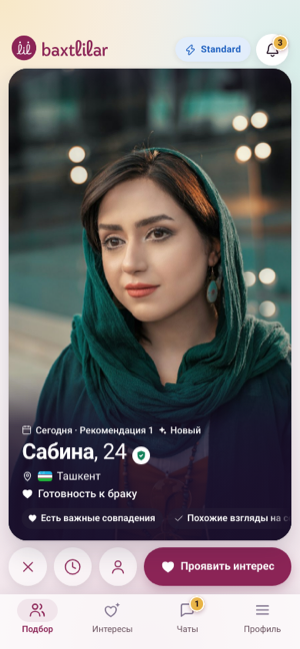
t12 · Atlas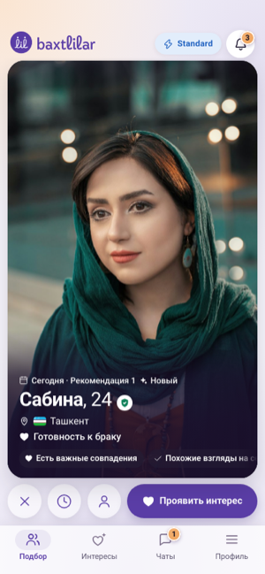
t13 · Lavanda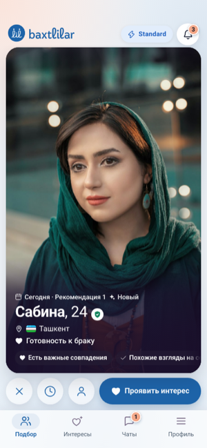
t14 · OsmonTadqiqot: ranglar psixologiyasi, madaniyat, brendbuk, AA (manbalar bilan)
Maqsad: oila qurish uchun jiddiy platformaga mos, lekin zerikarli bo'lmagan ranglar. Har bir da'vo yonida manba bor; dalil zaif joylar ochiq aytilgan. Mavzular galereyasi: mock build'dagi `themes.html` (`scripts/themes.mjs` yaratadi).
1. Rang ma'nosi kontekstga bog'liq
- Rang ma'no tashiydi va kayfiyat, fikr hamda xulqqa ta'sir qilishi mumkin. Lekin soha hali yosh, ta'sirning chegaralari kam o'rganilgan. manba
- Elliot va Niesta (2008) 5 ta tajriba o'tkazgan: qizil fonda yoki qizil kiyimdagi ayolni erkaklar jozibaliroq deb baholagan. manba
- Meta-tahlilda (Lehmann va boshq., 2018) ta'sir erkaklarda kichik (d≈0,26), ayollarda juda kichik (d≈0,13) chiqqan. Ayollar natijasi bo'rttirilgan, ta'sir yildan yilga kamaygan. manba, ma'lumot
- Xulosa: "qizil = romantika" degan fikrning dalili zaif. Bu tadqiqotlar faqat jinsiy jozibani o'lchagan, ishonch yoki jiddiylikni emas. Shu sabab qizil yoki och pushti asosiy rang sifatida foyda bermaydi (bu dizayn xulosasi).
2. Tus, to'yinganlik, yorqinlik
- Valdez va Mehrabian (1994): kayfiyatga tusdan ko'ra yorqinlik va to'yinganlik kuchliroq ta'sir qiladi. Yorqin rang yoqimliroq, to'yingan rang esa hayajonliroq. manba
- Shu tadqiqotda ko'k, ko'k-yashil, yashil va binafsha eng yoqimli tuslar chiqqan, sariq va yashil-sariq esa eng kam yoqimli. manba
- Wilms va Oberfeld (2018, N=62): yorqin, to'yingan rang hayajonni oshiradi. Hayajon ko'k va yashildan qizilga qarab ortib boradi. manba
- Muhim farq: bu tadqiqotda eng yoqimli ranglar ham to'yingan va yorqin bo'lib chiqqan. Demak "xira rang yoqimliroq" degan qoida yo'q. manba
- Amaliy taxmin: fon uchun o'rtacha to'yingan, yorqin rang, "zerikarli bo'lmaslik" uchun esa bitta to'yingan harakat rangi. Bu laboratoriya natijasidan chiqarilgan, ilovada sinalmagan.
3. Ishonch, xotirjamlik, iliqlik
- Labrecque va Milne (2012): rang tusi brendning qanday "xarakterli" ko'rinishiga ta'sir qiladi (ko'k "malakali", qizil "hayajonli"). Bu marketing tadqiqoti, ishonchni to'g'ridan-to'g'ri o'lchamagan. manba
- Cyr va boshq. (2010): saytdagi ranglar foydalanuvchiga yoqsa, saytga ishonch va qoniqish ortadi, lekin bu madaniyatga qarab farq qiladi. Bunda rangning o'zi emas, yoqishi muhim. manba
- "Ko'k ishonch uyg'otadi", "yashil tinchlantiradi" degan gaplar asosan marketing folklori, eksperimental dalili zaif. manba
- Iliq tuslar va yaqinlik hissi haqida ham dalil zaif: bu sohadagi tadqiqotlar asosan qizil va jozibaga bag'ishlangan. manba
4. O'zbekiston madaniy konteksti
- Temuriylar davri gumbazlari (Go'ri Amir, Bibixonim) asosan feruza koshin bilan qoplangan. manba Samarqand UNESCO Jahon merosi ro'yxatida. manba
- Lojuvard yoki ko'k rangning alohida ramziy ma'nosi haqida ishonchli manba topilmadi.
- Qizil an'anaviy matolarda hayot, oila o'chog'i, himoya va xavfsizlikni bildirgan, yovuz ruhlarni haydaydi deb ishonilgan. manba To'y marosimlarida ham shunday. manba
- Qoraqalpoq kelinining qizil kimeshegi kelin libosining eng muhim qismi bo'lgan. Oq kimeshekni esa keksa ayollar kiygan. manba
- Oq rang poklik va farovonlikni bildiradi. Lekin aza tutishda ko'k, qora va oq ishlatilgan, ya'ni oq va to'q ko'k ikki xil ma'noga ega. manba
- Anor: so'zanadagi palmetta naqshi anor guli hisoblanadi va hosildorlikni bildiradi. So'zana kelin sepining ajralmas qismi bo'lgan. manba
- Yashil: Qur'onda jannat ahli yashil ipak libos kiyadi (18:31). manba
- Navro'z bahor va tabiat bayrami, O'zbekiston bilan birga UNESCO ro'yxatida turadi. Lekin Navro'zni yashil rang bilan bog'laydigan manba topilmadi. manba
- Atlas ipak, adras yarim ipak mato hisoblanadi. manba "Qizil atlas kelin libosi" va oltin yoki oxra rangining ma'nosi muzey manbasida tasdiqlanmadi.
5. Hamma uchun qulaylik (WCAG)
- WCAG 2.2, 1.4.3 (AA): oddiy matn kamida 4,5:1 kontrast, katta matn 3:1. manba
- 1.4.11 (AA): tugma chegarasi, ikonka va holat belgisi yonidagi rangga nisbatan kamida 3:1. manba
- 1.4.1 (A): ma'lumot faqat rang orqali berilmasin. manba
- Yevropalik erkaklarning taxminan 8 foizi va ayollarning 0,4 foizi qizil-yashil ranglarni yaxshi ajrata olmaydi. Xitoy va yapon erkaklarida bu 4–6,5 foiz. O'zbekiston bo'yicha raqam topilmadi. manba
- Ilovada holatlar (xato, muvaffaqiyat, kutish) allaqachon ikonka va matn bilan beriladi; mavzularda yashil va qizil tus bo'yicha ham uzoq turadi (yashil ko'kka, qizil malinaga suriladi).
6. Brendbuk (Baxtlilar_branding.pdf, 2.0, 2026)
- G'oya: "Bir maqsad / Love is an action" — brend "Opekun" (himoyachi): harakat + himoya; iliq, ishonchli, jiddiy, insoniy.
- Asosiy ranglar: terrakota #C34F30 (ustun ton: iliqlik, energiya), iliq krem #E7DCD2 (fon, qulaylik), ko'mir #303030 (matn, tuzilma), urg'u yashil #80DB8C (o'sish, muvaffaqiyat). Tintlar: terrakota #F9ECE8 / #F0C8C0 / #E1907A / to'q #A61B1B; krem #FDFBFA / #F9F6F4 / #F3EDE9 / to'q #BCA99A; ko'mir #ECECEC / #BEBEBE / #7E7E7E / #121212; yashil #F2FBF3 / #DFF6E2 / #BFEDC5 / to'q #50A54F.
- Juftliklar: terrakota+krem (asosiy, onboarding, konversiya), ko'mir+krem (premium, profil), terrakota+ko'mir (reklama), yashil+krem (muvaffaqiyat, xavfsizlik).
- Shrift: TT Norms Pro (veb uchun Inter); 700/500/400; H1 64/1.1 … Body 16/1.5, Caption 14/1.5; uzun matnda katta harf yo'q.
- Logotip faqat terrakota, oq va ko'mir rangda; gradient, soya, rang-barang fon yo'q.
- Eslatma: PDF ichida sarlavha va namuna hexlari bir xil emas (#C84F20 / #C34F30, #CDC0C2 / #E7DCD2, #6DDB6C / #80DB8C); namunadagi qiymatlar olindi.
- Kontrast: oq matn #C34F30 ustida 4,7:1 (AA o'tadi), lekin #C34F30 matn krem #E7DCD2 ustida 3,4:1 (kichik matn uchun o'tmaydi); #80DB8C ustida oq matn 1,7:1 — yashil faqat to'q matn bilan ishlaydi. Shu sabab "aynan brendbuk" mavzusi ochiq fonda qoldirildi va "moslashtirilgan" mavzu bu kamchiliklarni tuzatadi.
- Avvalgi terrakotaga qayta bo'yash to'xtatilgan edi; shuning uchun brendbuk bu yerda faqat ikki variant sifatida ko'rsatiladi, boshqa mavzularga majburiy emas.
Xulosa / dizayn qoidalari
- Bitta ishonchli harakat rangi va bitta iliq urg'u rangi bo'lsin. Urg'u rangi faqat kichik detallarda (fon nuri, hisob belgilari) ishlatiladi.
- Och pushti yoki sof qizil asosiy tugma rangi bo'lmasin. Ular tasodifiy tanishuvni eslatadi, ilmiy afzalligi ham zaif.
- Faqat korporativ ko'kka tayanmaslik kerak. Feruza urg'u sifatida mahalliy ildizni eslatadi (bu dizayn fikri).
- Neytral fonlar iliq bo'lsin (krem, qum), sovuq kulrang emas. Katta yuzalar o'rtacha to'yingan va yorqin bo'lsin.
- Oq va to'q ko'k katta yuzada yolg'iz qolmasin, yoniga iliq urg'u qo'shilsin (aza ma'nosi tufayli).
- Holat ranglari tusi bilan ham, ikonka va matn bilan ham farq qilsin. Faqat qizil-yashil juftiga tayanmaslik kerak.
- Har bir mavzuda matn kontrasti kamida 4,5:1, UI elementlari kamida 3:1 bo'lsin (AA).
- Anor va so'zana naqshlari faqat bezak sifatida, mazmunli lahzalarda ishlatilsin (masalan, taklif qabul qilinganda).
Manbalar
- Elliot A.J., Maier M.A. (2014). Color psychology… Annu Rev Psychol. https://pubmed.ncbi.nlm.nih.gov/23808916/
- Elliot A.J., Niesta D. (2008). Romantic red… JPSP. https://doi.org/10.1037/0022-3514.95.5.1150
- Lehmann G.K., Elliot A.J., Calin-Jageman R.J. (2018). Meta-analysis of the effect of red on perceived attractiveness. Evol Psychol. https://journals.sagepub.com/doi/10.1177/1474704918802412
- Valdez P., Mehrabian A. (1994). Effects of color on emotions. JEP: General. https://pubmed.ncbi.nlm.nih.gov/7996122/
- Wilms L., Oberfeld D. (2018). Color and emotion… Psychol Res. https://pubmed.ncbi.nlm.nih.gov/28612080/
- Labrecque L., Milne G. (2012). Exciting red and competent blue. JAMS. https://colab.ws/articles/10.1007/s11747-010-0245-y
- Cyr D., Head M., Larios H. (2010). Colour appeal in website design… IJHCS. https://experts.mcmaster.ca/scholarly-works/58866
- Wikipedia (Bloom & Blair 2009 asosida). Timurid architecture. https://en.wikipedia.org/wiki/Timurid_architecture
- UNESCO. Samarkand – Crossroad of Cultures (2001). https://whc.unesco.org/en/list/603
- Gyul E. (2008). Colour Traditions in Creative Textile of Uzbekistan. San'at. https://sanat.orexca.com/2008/2008-3/elmira_gyul-4/
- WOSCU. What is the role of color in traditional Uzbek costume? https://society.uz/news/detail/news/603
- Harvard Art Museums. Qizil Kimishek (c. 1900). https://harvardartmuseums.org/collections/object/326290
- Denver Art Museum. Suzani. https://www.denverartmuseum.org/en/object/2002.3
- Wikipedia. Green in Islam. https://en.wikipedia.org/wiki/Green_in_Islam
- UNESCO ICH. Navruz (2016). https://ich.unesco.org/en/RL/nawrouz-novruz-nowrouz-nowrouz-nawrouz-nauryz-nooruz-nowruz-navruz-nevruz-nowruz-navruz-02097
- WOSCU. Adras, atlas and bekasabs. https://society.uz/news/detail/news/472
- W3C (2023). WCAG 2.2. https://www.w3.org/TR/WCAG22/
- Birch J. (2012). Worldwide prevalence of red-green color deficiency. JOSA A. https://pubmed.ncbi.nlm.nih.gov/22472762/
Havolalar tekshiruvi: 6, 7, 8, 10–17 sahifalari ochib tasdiqlangan; 1–5, 9, 18 faqat qidiruv natijalari va bir nechta mos bibliografiya orqali tasdiqlangan (PubMed/SAGE sahifani ochishga ruxsat bermadi).
brand Brendbuk dizayni
Baxtlilar_branding.pdf (2.0) bo‘yicha alohida dizayn: faqat palitra emas — fon, kartalar, tugma shakli, ikonka chizig‘i, logo qoidasi, halqa-chiziq motivi, shrift.
#c34f30#ad4428#e7dcd2#f3ede9#fdfbfa#303030#666666#80db8c#377236#a61b1b| Brendbuk nima deydi | Nima qo‘llandi | Nima qo‘llanmadi va nega |
|---|---|---|
| Ranglar va ulushi: terrakota #C34F30 — ustun harakat rangi, iliq krem #E7DCD2 — fon, ko‘mir #303030 — matn, yashil #80DB8C — muvaffaqiyat (bet 19–21). | Tugmalar, belgilar, logo, faol tab — terrakota; sahifa tekis krem #F3EDE9; kartalar #FDFBFA; matn #303030. Tintlar brendbuk shkalasidan aynan: #F9ECE8, #F0C8C0, #E1907A, #BCA99A; yashil tintlar #F2FBF3 / #DFF6E2 / #BFEDC5. | Tarif ranglari (egasining qoidasi) va ogohlantirish oltini (brendbukda sariq yo‘q, lekin “kutilmoqda” holati uchun kerak) o‘zgarmadi. |
| Kontrast (bet 19 qiymatlari). | Oq matn terrakota tugmada 4,7:1 — o‘tadi. Terrakota so‘zlar krem fonda bir pog‘ona chuqurroq #ad4428 (asos 4,0:1 bilan o‘tmaydi). Muvaffaqiyat matni #377236, yashil #80DB8C faqat fon/chip va ko‘mir matn bilan (bet 21 “Успешно” kabi). | #C34F30 kichik matn sifatida krem fonda AA dan o‘tmaydi, shuning uchun matnda aynan qo‘llanmadi. |
| Shrift: TT Norms Pro, vebda Inter; 700/500/400; Body 16/1.5, Caption 14/1.5; uzun matnda katta harf yo‘q (bet 24–26, 42). | Shrift qatori: TT Norms Pro → Inter → Roboto. Sarlavhalarda harf oralig‘i 0, matn qatori 1,5. | TT Norms Pro tijoriy — yuklab olinmadi. Inter loyihada yo‘q (yangi shrift paketi kerak) — qurilmada o‘rnatilgan bo‘lsa ishlatiladi, aks holda ilovadagi Roboto. 64/48/40px sarlavha o‘lchamlari sayt/poligrafiya uchun; Mini App ekran shkalasi o‘zgartirilmadi (tartib buziladi). |
| Logo: faqat terrakota, oq yoki ko‘mir; gradient, soya, nur yo‘q; vebda kamida 120px; himoya maydoni = “x” balandligi (bet 13–15, 42). | Disk va so‘z belgisi tekis terrakota (gradientsiz), suratlarda oq. | Tanlov sarlavhasidagi so‘z belgisi ~100px (sarlavha tor). Suratdagi logo orqasidagi yumshoq soya o‘qilishi uchun qoldi (u logo effekti emas, fon). |
| Shakllar: tugmalar yumshoq to‘rtburchak, ikonkalar 4–6px burchak; kartalar katta radius (bet 21, 28, 42). | Asosiy tugma 14px radius (pill emas), soyasiz; kartalar 20–26px qoldi. | Dumaloq ikonka-tugmalar (×, soat, profil) dumaloq qoldi — barmoq uchun nishon. |
| Kartalar va fon: oq kartalar krem ustida, tekis (bet 21, 42). | Shisha (blur) va binafsha nur o‘rniga oq karta + ingichka krem chiziq; aurora gradienti o‘rniga tekis krem. | — |
| Ikonkalar: 24px, 2px chiziq, yumaloq uchlar, harakat ikonkalari terrakota (bet 28–30). | Chiziq 1,8 → 2px; ma’no ikonkalari faqat palitrada: sevgi — terrakota, ma’lumot — ko‘mir, o‘sish — yashil. | Brendbukning o‘z ikonka chizmalari fayl sifatida yo‘q — lucide to‘plami qoldi. |
| Grafik motiv: terrakota halqa-chiziq, fon bezagida 10–25%, mayda matn ostida emas, logodan ≥0,5X (bet 32–34, 43). | Sahifaning pastki o‘ng burchagida 12% shaffoflikda halqa-chiziq (sarlavha va logodan uzoq). | Portretlarni bog‘lovchi chiziqlar (bet 43) — suratlar ustiga chizilmadi (suratlar o‘zgarmasin). |
| Fotosurat: iliq ton, kuchli filtr yo‘q (bet 42). | Surat ustidagi matn soyasi binafshadan iliq ko‘mirga o‘tdi. | Suratlarning o‘zi o‘zgarmadi (egasining qoidasi). |
| Xato/qizil: palitrada terrakota 150% #A61B1B (bet 20). | Xato rangi #A61B1B (oq ustida 7,4:1); doim ikonka va matn bilan. | Terrakotaga yaqin tus — rang ko‘rmaydiganlar uchun farq ikonka/matnda. |
| Modul to‘r, chekinishlar; muloqot ohangi “Opekun” (bet 4–6, 35–37). | — | Ekran tartibi va matnlar bu vazifada o‘zgarmadi (faqat rang va uslub). |
AA tekshiruvi — hammasi o‘tdi · moslandi
| Aa | Oq matn — harakat tugmasida | 4.69:1 | ✓ ≥ 4.5 |
| Aa | Terrakota matn — krem sahifada (chuqurroq ton) | 4.98:1 | ✓ ≥ 4.5 |
| Aa | Ko‘mir matn — kartada | 12.79:1 | ✓ ≥ 7 |
| Aa | Izoh matni — krem sahifada | 4.95:1 | ✓ ≥ 4.5 |
| Aa | Tanlangan matn — tanlov fonida | 8.52:1 | ✓ ≥ 4.5 |
| Aa | Muvaffaqiyat matni — oq | 5.80:1 | ✓ ≥ 4.5 |
| Aa | Ko‘mir matn — urg‘u yashilda (chip) | 7.81:1 | ✓ ≥ 4.5 |
| Aa | Xato matni — oq | 7.52:1 | ✓ ≥ 4.5 |
| Aa | Terrakota ikonka — kartada (UI 3:1) | 4.54:1 | ✓ ≥ 3 |
Moslandi: muvaffaqiyat yashili #50a54f → #3e813d (oq matn/belgi uchun); terrakota matn #c34f30 → #ad4428 (krem fonda).
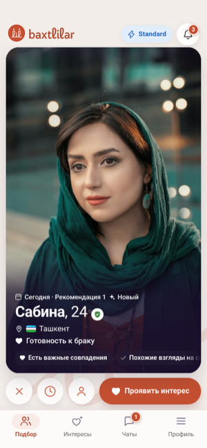
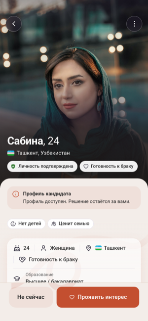
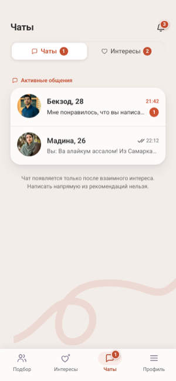
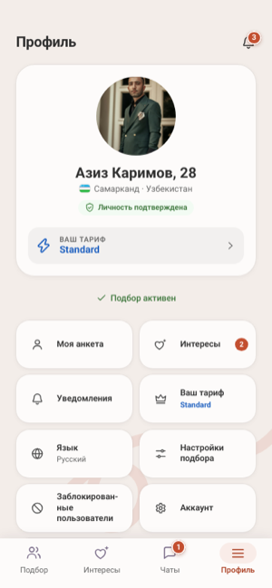
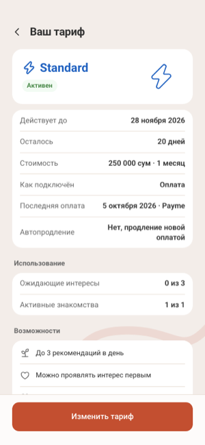
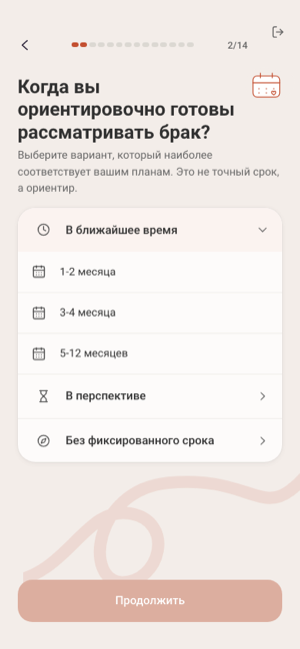
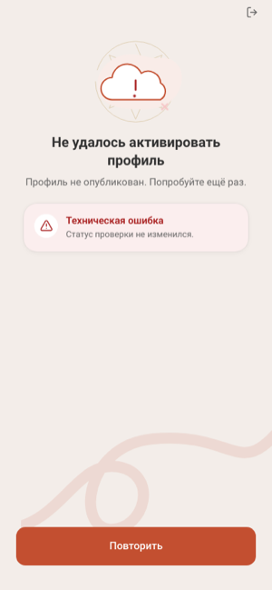
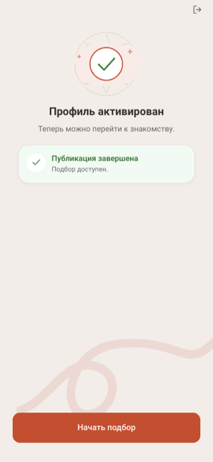
Ilovani brendbuk dizaynida ochish → (qaytarish: ?theme=)
t01 Hozirgi
Bugungi binafsha: ishonchli harakat rangi, pushti-ko‘k aurora.
Binafsha — eng yoqimli tuslar qatorida (Valdez & Mehrabian); bitta to‘yingan rang ekranni jonli qiladi. Kamchiligi: “sehrli/ko‘ngilochar” o‘qilishi mumkin, madaniy ildizi kam.
#6d28d9#521ea3#f1ebfb#ff8fbf#f6f2fd#1d1033#63537e#0f8058#8a5a00#c8234aAA tekshiruvi — hammasi o‘tdi
| Aa | Oq matn — harakat tugmasida | 7.10:1 | ✓ ≥ 4.5 |
| Aa | Harakat rangi matn — sahifada | 6.44:1 | ✓ ≥ 4.5 |
| Aa | Asosiy matn — kartada | 17.24:1 | ✓ ≥ 7 |
| Aa | Izoh matni — sahifada | 6.20:1 | ✓ ≥ 4.5 |
| Aa | Tanlangan matn — tanlov fonida | 12.10:1 | ✓ ≥ 4.5 |
| Aa | Muvaffaqiyat matni — oq | 4.94:1 | ✓ ≥ 4.5 |
| Aa | Xato matni — oq | 5.53:1 | ✓ ≥ 4.5 |
| Aa | Xato matni — xato fonida | 4.79:1 | ✓ ≥ 4.5 |
| Aa | Raqam — urg‘u belgisida | 7.10:1 | ✓ ≥ 4.5 |
| Aa | Tanlanmagan belgi chegarasi — oq | 2.11:1 | ✓ |
Ilovani shu mavzuda ochish → (qaytarish: ?theme=)
t02 Brendbuk
Brendbukdagi ranglar aynan: terrakota, krem, ko‘mir, urg‘u yashil.
Brendbuk “Opekun” g‘oyasi: iliq terrakota + xavfsiz krem. Aynan qiymatlar AA talabidan qisman o‘tmaydi — pastdagi jadvalda ko‘rinadi.
#c34f30#923b24#f9eeeb#80db8c#f3ede9#303030#785e58#3e813d#8a5a00#c8234aAA tekshiruvi — kamchilik bor · moslandi
| Aa | Oq matn — harakat tugmasida | 4.69:1 | ✓ ≥ 4.5 |
| Aa | Harakat rangi matn — sahifada | 4.04:1 | ✗ ≥ 4.5 |
| Aa | Asosiy matn — kartada | 12.47:1 | ✓ ≥ 7 |
| Aa | Izoh matni — sahifada | 5.11:1 | ✓ ≥ 4.5 |
| Aa | Tanlangan matn — tanlov fonida | 9.74:1 | ✓ ≥ 4.5 |
| Aa | Muvaffaqiyat matni — oq | 4.76:1 | ✓ ≥ 4.5 |
| Aa | Xato matni — oq | 5.53:1 | ✓ ≥ 4.5 |
| Aa | Xato matni — xato fonida | 4.79:1 | ✓ ≥ 4.5 |
| Aa | Raqam — urg‘u belgisida | 4.69:1 | ✓ ≥ 4.5 |
| Aa | Tanlanmagan belgi chegarasi — oq | 1.92:1 | ✓ ≥ 1.5 |
Moslandi: muvaffaqiyat yashili #50a54f → #3e813d (matn uchun).
Ilovani shu mavzuda ochish → (qaytarish: ?theme=)
t03 Brendbuk+
Brendbuk ruhi, AA uchun moslangan: chuqurroq terrakota, krem fon, za’faron urg‘u, shalfey yashil muvaffaqiyat.
Terrakota iliqlik va “o‘choq” ma’nosini beradi; chuqurroq ton oq matnga 5,6:1 beradi. Krem fon — qulaylik, ko‘mir matn — jiddiylik.
#ad4428#82331e#f7edeb#e3a33b#f6f0eb#2b2624#735b55#2f7d4f#8a5a00#c8234aAA tekshiruvi — hammasi o‘tdi
| Aa | Oq matn — harakat tugmasida | 5.78:1 | ✓ ≥ 4.5 |
| Aa | Harakat rangi matn — sahifada | 5.11:1 | ✓ ≥ 4.5 |
| Aa | Asosiy matn — kartada | 14.25:1 | ✓ ≥ 7 |
| Aa | Izoh matni — sahifada | 5.54:1 | ✓ ≥ 4.5 |
| Aa | Tanlangan matn — tanlov fonida | 10.94:1 | ✓ ≥ 4.5 |
| Aa | Muvaffaqiyat matni — oq | 5.04:1 | ✓ ≥ 4.5 |
| Aa | Xato matni — oq | 5.53:1 | ✓ ≥ 4.5 |
| Aa | Xato matni — xato fonida | 4.79:1 | ✓ ≥ 4.5 |
| Aa | Raqam — urg‘u belgisida | 7.80:1 | ✓ ≥ 4.5 |
| Aa | Tanlanmagan belgi chegarasi — oq | 2.00:1 | ✓ ≥ 1.5 |
Ilovani shu mavzuda ochish → (qaytarish: ?theme=)
t04 Samarqand
Feruza koshinlar: chuqur feruza harakat, oltin urg‘u, sutrang fon.
Ko‘k-yashil — eng yoqimli va eng kam hayajonli tuslar (Valdez & Mehrabian; Wilms & Oberfeld). Feruza — Temuriylar gumbazlari, mahalliy ildiz; oltin urg‘u iliqlik qo‘shadi.
#0d6b75#0a5058#e8f1f2#c99230#f0f6f7#101925#4c6266#0f8058#8a5a00#c8234aAA tekshiruvi — hammasi o‘tdi
| Aa | Oq matn — harakat tugmasida | 6.22:1 | ✓ ≥ 4.5 |
| Aa | Harakat rangi matn — sahifada | 5.69:1 | ✓ ≥ 4.5 |
| Aa | Asosiy matn — kartada | 17.14:1 | ✓ ≥ 7 |
| Aa | Izoh matni — sahifada | 5.92:1 | ✓ ≥ 4.5 |
| Aa | Tanlangan matn — tanlov fonida | 11.25:1 | ✓ ≥ 4.5 |
| Aa | Muvaffaqiyat matni — oq | 4.94:1 | ✓ ≥ 4.5 |
| Aa | Xato matni — oq | 5.53:1 | ✓ ≥ 4.5 |
| Aa | Xato matni — xato fonida | 4.79:1 | ✓ ≥ 4.5 |
| Aa | Raqam — urg‘u belgisida | 6.85:1 | ✓ ≥ 4.5 |
| Aa | Tanlanmagan belgi chegarasi — oq | 1.99:1 | ✓ ≥ 1.5 |
Ilovani shu mavzuda ochish → (qaytarish: ?theme=)
t05 Lojuvard
Lojuvard ko‘k harakat + terrakota urg‘u.
Ko‘k “malakali, ishonchli” o‘qiladi (Labrecque & Milne), lekin yolg‘iz sovuq/bankdek; terrakota urg‘u iliqlik va oila ruhini qaytaradi.
#2e4aa3#23387a#ebeef6#d0703f#f2f4f9#14152b#545a70#0f8058#8a5a00#c8234aAA tekshiruvi — hammasi o‘tdi
| Aa | Oq matn — harakat tugmasida | 8.00:1 | ✓ ≥ 4.5 |
| Aa | Harakat rangi matn — sahifada | 7.27:1 | ✓ ≥ 4.5 |
| Aa | Asosiy matn — kartada | 17.31:1 | ✓ ≥ 7 |
| Aa | Izoh matni — sahifada | 6.21:1 | ✓ ≥ 4.5 |
| Aa | Tanlangan matn — tanlov fonida | 12.67:1 | ✓ ≥ 4.5 |
| Aa | Muvaffaqiyat matni — oq | 4.94:1 | ✓ ≥ 4.5 |
| Aa | Xato matni — oq | 5.53:1 | ✓ ≥ 4.5 |
| Aa | Xato matni — xato fonida | 4.79:1 | ✓ ≥ 4.5 |
| Aa | Raqam — urg‘u belgisida | 5.49:1 | ✓ ≥ 4.5 |
| Aa | Tanlanmagan belgi chegarasi — oq | 2.07:1 | ✓ ≥ 1.5 |
Ilovani shu mavzuda ochish → (qaytarish: ?theme=)
t06 Anor
Yumshatilgan anor rangi, fil suyagi fon, oltin urg‘u.
Anor — so‘zanada hosildorlik va oila ramzi. Sof qizil emas, chuqur vino tusi: hissiyot bor, lekin “tasodifiy tanishuv” qizili emas.
#982141#721931#f5eaed#c99a3e#f9f2f4#230f1e#6e5159#0f8058#8a5a00#c4321fAA tekshiruvi — hammasi o‘tdi
| Aa | Oq matn — harakat tugmasida | 7.99:1 | ✓ ≥ 4.5 |
| Aa | Harakat rangi matn — sahifada | 7.24:1 | ✓ ≥ 4.5 |
| Aa | Asosiy matn — kartada | 17.47:1 | ✓ ≥ 7 |
| Aa | Izoh matni — sahifada | 6.38:1 | ✓ ≥ 4.5 |
| Aa | Tanlangan matn — tanlov fonida | 12.78:1 | ✓ ≥ 4.5 |
| Aa | Muvaffaqiyat matni — oq | 4.94:1 | ✓ ≥ 4.5 |
| Aa | Xato matni — oq | 5.49:1 | ✓ ≥ 4.5 |
| Aa | Xato matni — xato fonida | 4.81:1 | ✓ ≥ 4.5 |
| Aa | Raqam — urg‘u belgisida | 7.43:1 | ✓ ≥ 4.5 |
| Aa | Tanlanmagan belgi chegarasi — oq | 2.14:1 | ✓ ≥ 1.5 |
Ilovani shu mavzuda ochish → (qaytarish: ?theme=)
t07 Olxo‘ri
Olxo‘ri (plum) + o‘rik urg‘u.
To‘q olxo‘ri binafshaga yaqin (tanish), lekin issiqroq va kattalarcha; o‘rik urg‘u yaqinlik va iliqlik beradi.
#6b2c5f#502147#f1ebf0#ef9f57#f6f2f5#1d1022#625460#0f8058#8a5a00#c8234aAA tekshiruvi — hammasi o‘tdi
| Aa | Oq matn — harakat tugmasida | 9.76:1 | ✓ ≥ 4.5 |
| Aa | Harakat rangi matn — sahifada | 8.81:1 | ✓ ≥ 4.5 |
| Aa | Asosiy matn — kartada | 17.58:1 | ✓ ≥ 7 |
| Aa | Izoh matni — sahifada | 6.41:1 | ✓ ≥ 4.5 |
| Aa | Tanlangan matn — tanlov fonida | 13.86:1 | ✓ ≥ 4.5 |
| Aa | Muvaffaqiyat matni — oq | 4.94:1 | ✓ ≥ 4.5 |
| Aa | Xato matni — oq | 5.53:1 | ✓ ≥ 4.5 |
| Aa | Xato matni — xato fonida | 4.79:1 | ✓ ≥ 4.5 |
| Aa | Raqam — urg‘u belgisida | 8.95:1 | ✓ ≥ 4.5 |
| Aa | Tanlanmagan belgi chegarasi — oq | 2.14:1 | ✓ ≥ 1.5 |
Ilovani shu mavzuda ochish → (qaytarish: ?theme=)
t08 Zumrad
Zumrad yashil + krem, marjon urg‘u.
Yashil — bahor, o‘sish, Islomda jannat rangi; xotirjam. Muvaffaqiyat yashili boshqa tusga surildi va doim ikonka bilan beriladi.
#0b6f52#08533e#e8f1ef#e0876a#f0f6f5#0f1a20#4b635d#28843c#8a5a00#c8234aAA tekshiruvi — hammasi o‘tdi · moslandi
| Aa | Oq matn — harakat tugmasida | 6.16:1 | ✓ ≥ 4.5 |
| Aa | Harakat rangi matn — sahifada | 5.63:1 | ✓ ≥ 4.5 |
| Aa | Asosiy matn — kartada | 17.11:1 | ✓ ≥ 7 |
| Aa | Izoh matni — sahifada | 5.92:1 | ✓ ≥ 4.5 |
| Aa | Tanlangan matn — tanlov fonida | 11.21:1 | ✓ ≥ 4.5 |
| Aa | Muvaffaqiyat matni — oq | 4.71:1 | ✓ ≥ 4.5 |
| Aa | Xato matni — oq | 5.53:1 | ✓ ≥ 4.5 |
| Aa | Xato matni — xato fonida | 4.79:1 | ✓ ≥ 4.5 |
| Aa | Raqam — urg‘u belgisida | 7.05:1 | ✓ ≥ 4.5 |
| Aa | Tanlanmagan belgi chegarasi — oq | 1.99:1 | ✓ ≥ 1.5 |
Moslandi: muvaffaqiyat yashili #2a8a3e → #28843c (matn uchun).
Ilovani shu mavzuda ochish → (qaytarish: ?theme=)
t09 Sabza
To‘q dengiz ko‘ki harakat, shalfey fon, o‘rik urg‘u.
Navy — jiddiylik va barqarorlik; shalfey fon tabiiy xotirjamlik; o‘rik urg‘u ko‘kning sovuqligini yumshatadi.
#26406b#1d3050#eaedf1#e3955a#f2f4f6#131324#525863#0f8058#8a5a00#c8234aAA tekshiruvi — hammasi o‘tdi
| Aa | Oq matn — harakat tugmasida | 10.35:1 | ✓ ≥ 4.5 |
| Aa | Harakat rangi matn — sahifada | 9.39:1 | ✓ ≥ 4.5 |
| Aa | Asosiy matn — kartada | 17.68:1 | ✓ ≥ 7 |
| Aa | Izoh matni — sahifada | 6.49:1 | ✓ ≥ 4.5 |
| Aa | Tanlangan matn — tanlov fonida | 14.26:1 | ✓ ≥ 4.5 |
| Aa | Muvaffaqiyat matni — oq | 4.94:1 | ✓ ≥ 4.5 |
| Aa | Xato matni — oq | 5.53:1 | ✓ ≥ 4.5 |
| Aa | Xato matni — xato fonida | 4.79:1 | ✓ ≥ 4.5 |
| Aa | Raqam — urg‘u belgisida | 8.00:1 | ✓ ≥ 4.5 |
| Aa | Tanlanmagan belgi chegarasi — oq | 2.15:1 | ✓ ≥ 1.5 |
Ilovani shu mavzuda ochish → (qaytarish: ?theme=)
t10 Tun
Yarim tun indigo + atirgul-oltin urg‘u.
Chuqur indigo — jiddiy, premium; atirgul-oltin iliq va nafis, ortiqcha “romantik qizil”siz.
#302b66#24204d#ebebf0#c88577#f3f2f6#141023#555362#0f8058#8a5a00#c8234aAA tekshiruvi — hammasi o‘tdi
| Aa | Oq matn — harakat tugmasida | 12.63:1 | ✓ ≥ 4.5 |
| Aa | Harakat rangi matn — sahifada | 11.33:1 | ✓ ≥ 4.5 |
| Aa | Asosiy matn — kartada | 17.86:1 | ✓ ≥ 7 |
| Aa | Izoh matni — sahifada | 6.73:1 | ✓ ≥ 4.5 |
| Aa | Tanlangan matn — tanlov fonida | 15.30:1 | ✓ ≥ 4.5 |
| Aa | Muvaffaqiyat matni — oq | 4.94:1 | ✓ ≥ 4.5 |
| Aa | Xato matni — oq | 5.53:1 | ✓ ≥ 4.5 |
| Aa | Xato matni — xato fonida | 4.79:1 | ✓ ≥ 4.5 |
| Aa | Raqam — urg‘u belgisida | 6.55:1 | ✓ ≥ 4.5 |
| Aa | Tanlanmagan belgi chegarasi — oq | 2.24:1 | ✓ ≥ 1.5 |
Ilovani shu mavzuda ochish → (qaytarish: ?theme=)
t11 Qum
Iliq qum fon + indigo harakat, oxra urg‘u.
Iliq neytral fon (sovuq kulrang emas) + bitta to‘yingan indigo: tinch, lekin jonli.
#4a3fae#382f83#eeedf7#c98a35#f5f0e8#18132d#5b5773#0f8058#8a5a00#c8234aAA tekshiruvi — hammasi o‘tdi
| Aa | Oq matn — harakat tugmasida | 8.04:1 | ✓ ≥ 4.5 |
| Aa | Harakat rangi matn — sahifada | 7.08:1 | ✓ ≥ 4.5 |
| Aa | Asosiy matn — kartada | 17.08:1 | ✓ ≥ 7 |
| Aa | Izoh matni — sahifada | 6.06:1 | ✓ ≥ 4.5 |
| Aa | Tanlangan matn — tanlov fonida | 12.67:1 | ✓ ≥ 4.5 |
| Aa | Muvaffaqiyat matni — oq | 4.94:1 | ✓ ≥ 4.5 |
| Aa | Xato matni — oq | 5.53:1 | ✓ ≥ 4.5 |
| Aa | Xato matni — xato fonida | 4.79:1 | ✓ ≥ 4.5 |
| Aa | Raqam — urg‘u belgisida | 6.51:1 | ✓ ≥ 4.5 |
| Aa | Tanlanmagan belgi chegarasi — oq | 2.08:1 | ✓ ≥ 1.5 |
Ilovani shu mavzuda ochish → (qaytarish: ?theme=)
t12 Atlas
Atlas-adras: to‘q malina harakat, za’faron urg‘u, feruza nur.
Atlas naqshining rang to‘qnashuvi, lekin chuqur tonlarda: bayram ruhi bor, jiddiylik saqlanadi.
#8b2456#681b41#f4eaef#e7ae38#f8f2f5#210f21#6a525e#0f8058#8a5a00#c4321fAA tekshiruvi — hammasi o‘tdi
| Aa | Oq matn — harakat tugmasida | 8.45:1 | ✓ ≥ 4.5 |
| Aa | Harakat rangi matn — sahifada | 7.65:1 | ✓ ≥ 4.5 |
| Aa | Asosiy matn — kartada | 17.50:1 | ✓ ≥ 7 |
| Aa | Izoh matni — sahifada | 6.38:1 | ✓ ≥ 4.5 |
| Aa | Tanlangan matn — tanlov fonida | 13.13:1 | ✓ ≥ 4.5 |
| Aa | Muvaffaqiyat matni — oq | 4.94:1 | ✓ ≥ 4.5 |
| Aa | Xato matni — oq | 5.49:1 | ✓ ≥ 4.5 |
| Aa | Xato matni — xato fonida | 4.81:1 | ✓ ≥ 4.5 |
| Aa | Raqam — urg‘u belgisida | 9.58:1 | ✓ ≥ 4.5 |
| Aa | Tanlanmagan belgi chegarasi — oq | 2.15:1 | ✓ ≥ 1.5 |
Ilovani shu mavzuda ochish → (qaytarish: ?theme=)
t13 Lavanda
Hozirgi binafsha, iliqroq: lavanda-binafsha + o‘rik urg‘u.
Tanish rangni saqlaydi, lekin pushti o‘rniga o‘rik: “ko‘ngilochar” emas, “oilaviy” iliqlik.
#5a3da6#442e7d#efedf7#f0a35b#f5f3fa#1a132c#5e5771#0f8058#8a5a00#c8234aAA tekshiruvi — hammasi o‘tdi
| Aa | Oq matn — harakat tugmasida | 7.92:1 | ✓ ≥ 4.5 |
| Aa | Harakat rangi matn — sahifada | 7.19:1 | ✓ ≥ 4.5 |
| Aa | Asosiy matn — kartada | 17.21:1 | ✓ ≥ 7 |
| Aa | Izoh matni — sahifada | 6.20:1 | ✓ ≥ 4.5 |
| Aa | Tanlangan matn — tanlov fonida | 12.59:1 | ✓ ≥ 4.5 |
| Aa | Muvaffaqiyat matni — oq | 4.94:1 | ✓ ≥ 4.5 |
| Aa | Xato matni — oq | 5.53:1 | ✓ ≥ 4.5 |
| Aa | Xato matni — xato fonida | 4.79:1 | ✓ ≥ 4.5 |
| Aa | Raqam — urg‘u belgisida | 9.15:1 | ✓ ≥ 4.5 |
| Aa | Tanlanmagan belgi chegarasi — oq | 2.08:1 | ✓ ≥ 1.5 |
Ilovani shu mavzuda ochish → (qaytarish: ?theme=)
t14 Osmon
Ochiq osmon ko‘ki + shaftoli urg‘u.
Ko‘k yo‘nalishini sinash uchun: ishonchli va toza; shaftoli urg‘u bank sovuqligidan qochiradi.
#1d63a8#164a7e#eaf0f7#f2a07f#f1f6fa#12182c#506072#0f8058#8a5a00#c8234aAA tekshiruvi — hammasi o‘tdi
| Aa | Oq matn — harakat tugmasida | 6.17:1 | ✓ ≥ 4.5 |
| Aa | Harakat rangi matn — sahifada | 5.67:1 | ✓ ≥ 4.5 |
| Aa | Asosiy matn — kartada | 17.11:1 | ✓ ≥ 7 |
| Aa | Izoh matni — sahifada | 5.93:1 | ✓ ≥ 4.5 |
| Aa | Tanlangan matn — tanlov fonida | 11.33:1 | ✓ ≥ 4.5 |
| Aa | Muvaffaqiyat matni — oq | 4.94:1 | ✓ ≥ 4.5 |
| Aa | Xato matni — oq | 5.53:1 | ✓ ≥ 4.5 |
| Aa | Xato matni — xato fonida | 4.79:1 | ✓ ≥ 4.5 |
| Aa | Raqam — urg‘u belgisida | 9.05:1 | ✓ ≥ 4.5 |
| Aa | Tanlanmagan belgi chegarasi — oq | 1.99:1 | ✓ ≥ 1.5 |
Ilovani shu mavzuda ochish → (qaytarish: ?theme=)